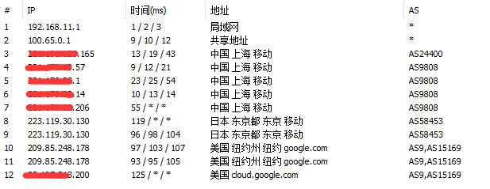
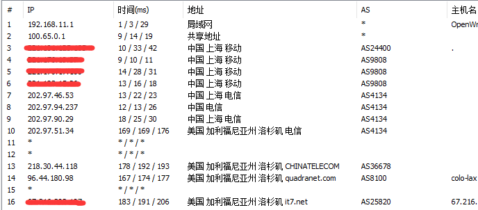
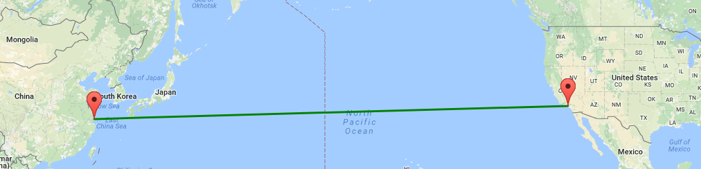
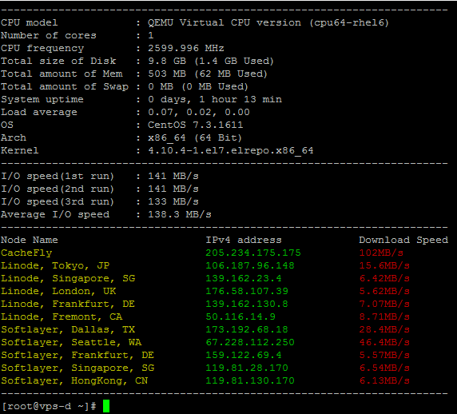
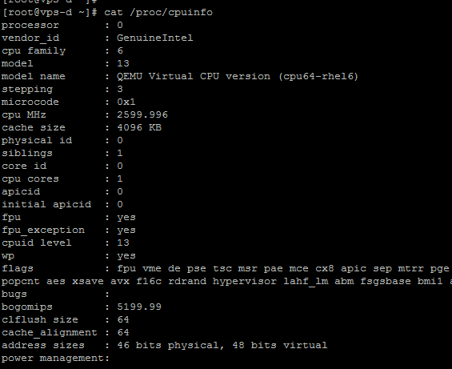
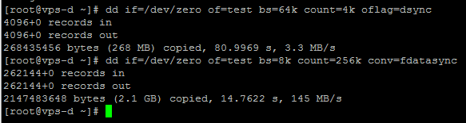
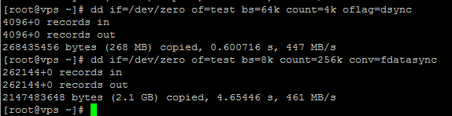
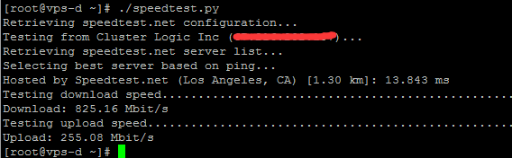
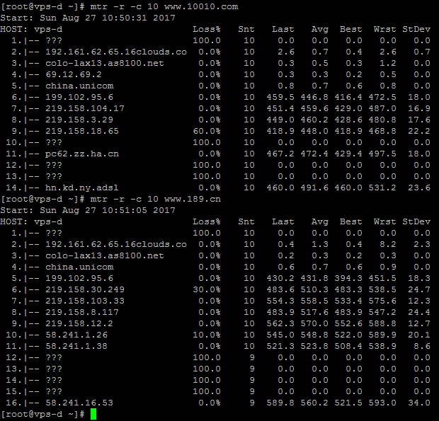
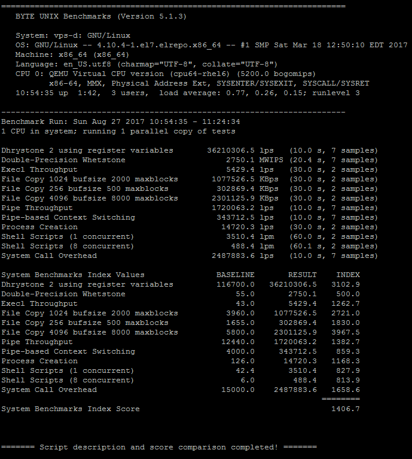

折腾了两天Vps, 真可恨呢~
几个月前挂了个hello-world在gce上, 也忘记关了. 今天一看账单扣了我60多刀, 我滴个神呢. 白花花的银子就这么没了.
可是手贱又把gcp的内存从1.7改成了0.6, 想着能省就省点吧. 鬼知道重新分配了个ip, 原来直联日本, 现在搞得要绕美国了, 延迟老高了. 哎~

不管怎么说gcp好是好，可还是太贵了, 于是又想着以前的Bandwagon Vps内存256还是OVZ的, 反正也快到期了, 要不换一个大点内存的. 就选了个年付LA直联中国的.
鬼知道测试下来的指标太不满意了. 广大同胞们都把Bandwagon玩坏了. 哎~


wget -qO- bench.sh | bash or curl -Lso- bench.sh | bash

于是又单独查看了Cpu, Memory, Disk等各项参数, swap也没开, 硬盘读写简直了...
cat /proc/cpuinfo

dd if=/dev/zero of=test bs=64k count=4k oflag=dsync dd if=/dev/zero of=test bs=8k count=256k conv=fdatasync

相比之前的vps简直差太多了, LA机房直联中国严重超售了:

首先测试vps的download和upload, speedtest.py
wget --no-check-certificate https://raw.githubusercontent.com/sivel/speedtest-cli/master/speedtest.py chmod +x speedtest.py ./speedtest.py

然后用mtr分别测试联通和电信：

最后用秋水逸冰的unixbench.sh脚本跑分测试了一下：
wget --no-check-certificate https://github.com/teddysun/across/raw/master/unixbench.sh chmod +x unixbench.sh ./unixbench.sh

跑分倒还可以，只是这个磁盘读写不能让人满意. 现在倒是不知道该如何取舍了~